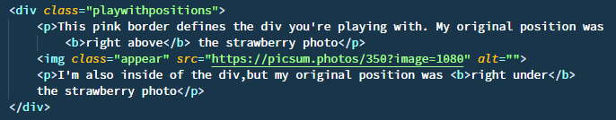
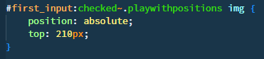

This pink border defines the div you're playing with. This paragraph original position was
right above the strawberry photo

I'm also inside of the div,but my original position was
right under
the strawberry photo
3
If none of the img parents is positioned (position property to anything other than static) the img would use the offset value ( top:220px) relative to the body.
Click on me to set position: relative at the div that contains the image.


Look how the content that were under the picture goes up and fill the space that belonged to it.